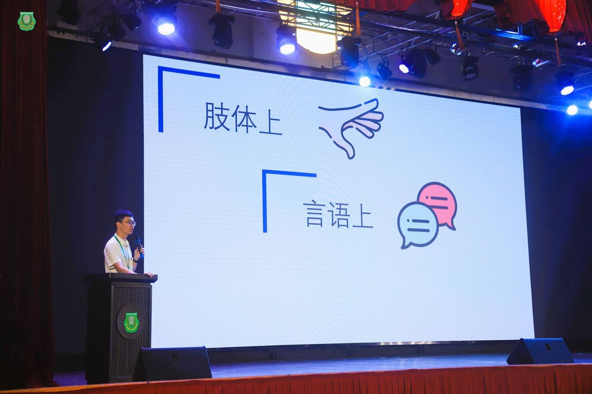
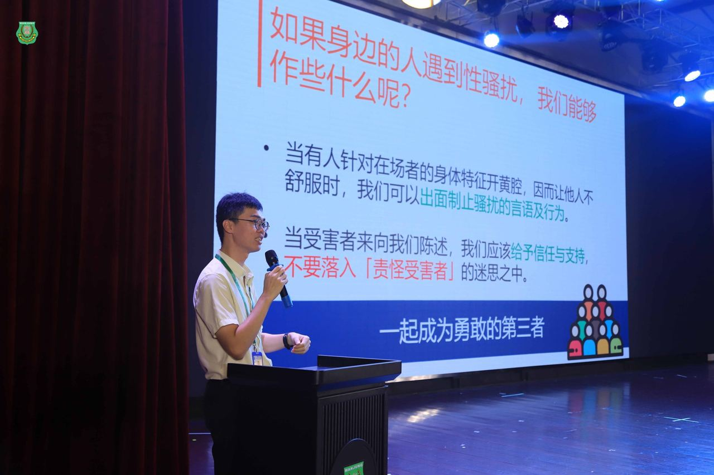
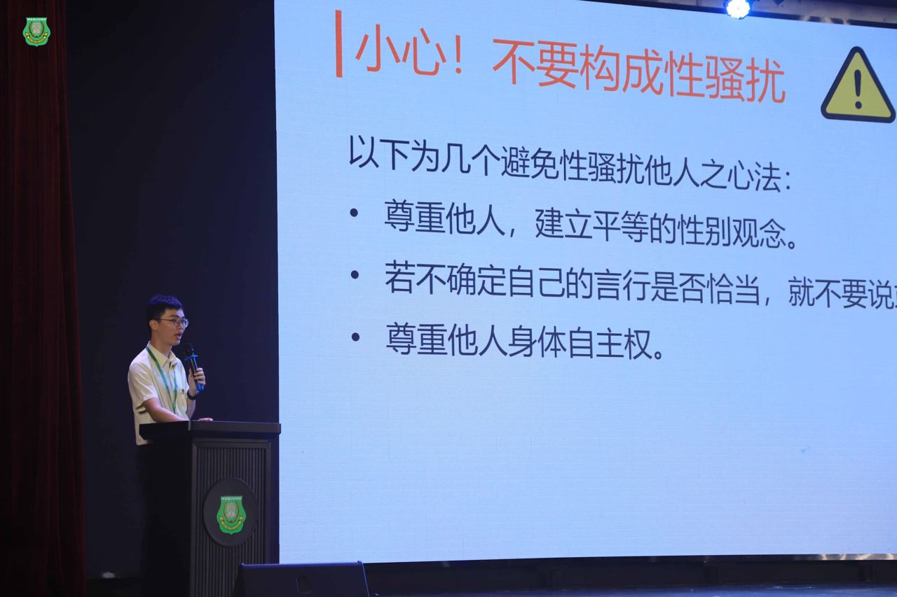
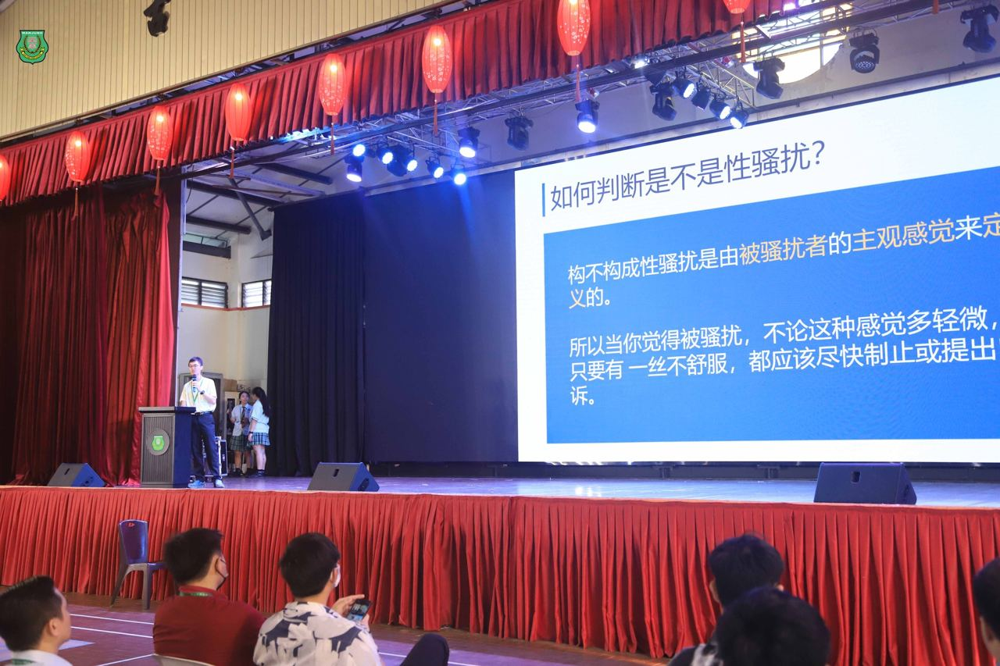
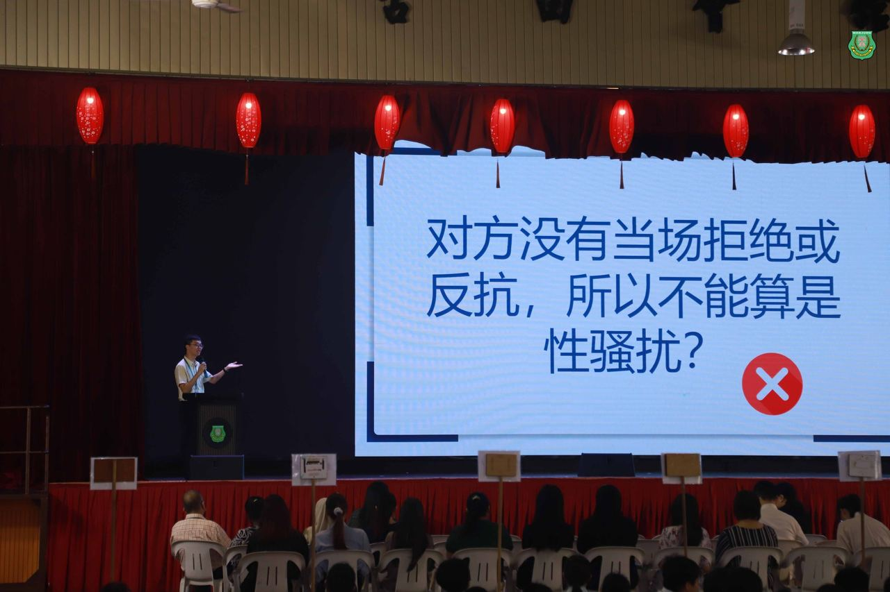

南华独中举办专题讲座
南华独中举办专题讲座
认识性骚扰，从“尊重”开始
在日前周会上，由本校辅导处主任叶佳盛老师主讲了一场题为《什么？！这是性骚扰？》的专题讲座，深入探讨校园中常被忽视的性骚扰议题，引导学生正视界限、理解尊重，并勇敢说“不”。
讲座伊始，叶老师以日常生活中的例子抛出问题：“你认为什么是性骚扰？”以此引发全体师生的思考。接着，讲座从三个层面——肢体、言语、视觉，具体解析了性骚扰的表现形式，并延伸至性别骚扰、性挑逗与暗示、性要胁、性索贿及性攻击等多种形态，让学生明白性骚扰并不限于极端行为，许多看似“玩笑话”或“无伤大雅的接触”，都有可能是对他人界限的侵犯。
叶老师特别强调：“判断性骚扰的关键，在于当事人的主观感受。只要对方觉得不舒服，不论情节轻重，就该被认真看待。”这番话获得了不少学生的认同。
为了协助学生避免成为施害者，讲座也提出了几项心法，包括尊重他人的身体自主权、避免性别刻板印象、不要误解友善为暗示等，提醒学生时刻检视自己的言行，营造一个安全与互信的学习环境。
讲座尾声，叶老师鼓励学生若遇性骚扰，应及时告诉信任的人、记录经过、提出申诉，并强调“沉默不等于同意”，每个人都拥有说“不”的权利。
校长陈丽冰博士引用儒家名言，勉励学生：“克己复礼为仁，非礼勿视，非礼勿听，非礼勿言，非礼勿动。”她指出，人与人之间的相处应以礼为本，礼不仅是一种教养，更是彼此尊重与守护的界限，并语重心长地提醒学生，除了尊重他人，更好学会保护自己，要及时找到值得信任的大人，反映自身遇到的遭遇。




